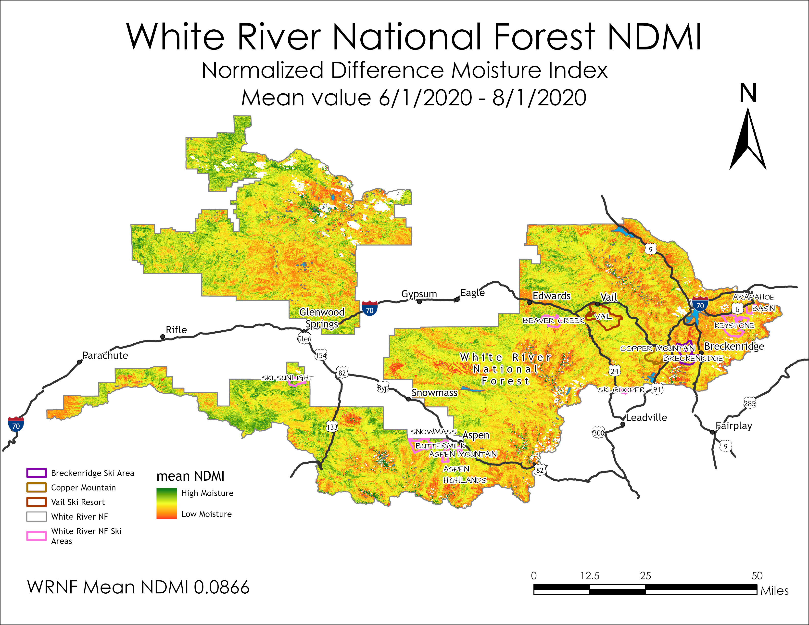

NDVI For White River National Forest
The forest health over the entire forest compared to the forest health of the local ski areas shows that thte forest vegitation is less healthy on the ski area land. Also, the soil moisture measured by NDMI is also lower on the ski areas than the forest average.
NDVI = Normalized Difference Vegetation Index
NDMI For White River National Forest
NDMI = Normalized Difference Moisture Index